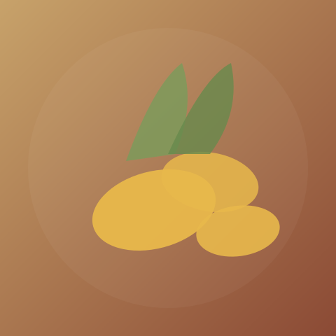
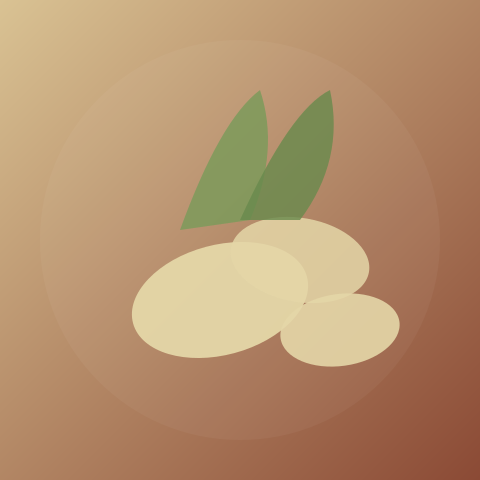
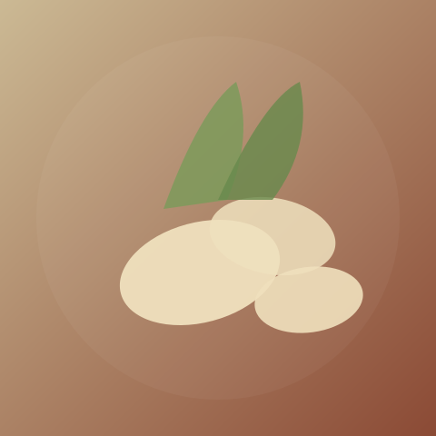
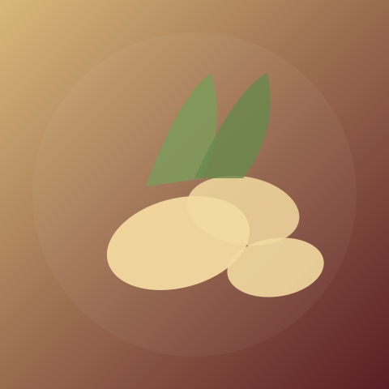

RimpangKunyit
Curcuma longa
Rimpang kuning yang kaya kurkumin, dikenal luas sebagai anti-inflamasi alami dan bumbu dapur khas Nusantara.
Lihat InformasiKenali kembali kekayaan tanaman obat Nusantara — dari dapur hingga jamu leluhur, disusun secara ilmiah dan mudah dipahami untuk siapa saja.
Setiap tanaman memiliki halaman informasi lengkap: kandungan, manfaat, cara penggunaan, hingga referensi jurnal ilmiah.

RimpangCurcuma longa
Rimpang kuning yang kaya kurkumin, dikenal luas sebagai anti-inflamasi alami dan bumbu dapur khas Nusantara.
Lihat Informasi
RimpangZingiber officinale
Rimpang pedas dan hangat yang populer untuk meredakan mual, masuk angin, serta menghangatkan tubuh.
Lihat InformasiCurcuma zanthorrhiza
Rimpang khas Indonesia yang telah lama digunakan untuk menjaga kesehatan fungsi hati dan pencernaan.
Lihat Informasi
RimpangKaempferia galanga
Rimpang aromatik bahan dasar jamu beras kencur, dipercaya membantu meredakan batuk dan menambah nafsu makan.
Lihat Informasi Batang
Batang
Cymbopogon citratus
Tanaman beraroma sitrus yang menyegarkan, populer sebagai bumbu masakan sekaligus teh penenang tubuh.
Lihat Informasi
RimpangAlpinia galanga
Rimpang beraroma tajam yang menjadi bumbu wajib masakan Nusantara sekaligus penambah stamina tradisional.
Lihat InformasiPiper betle
Daun berbentuk hati dengan sifat antiseptik alami, digunakan turun-temurun untuk menjaga kebersihan mulut dan luka ringan.
Lihat InformasiDirancang untuk mendampingi taman edukasi dan kebun herbal fisik melalui pemindaian kode QR.
Cukup pindai kode QR di dekat tanaman untuk langsung membuka halaman informasinya, tanpa perlu mencari manual.
Setiap manfaat dan kandungan yang ditampilkan disertai tautan referensi jurnal ilmiah untuk pembacaan lebih lanjut.
Bahasa yang digunakan disusun secara sederhana agar dapat dipahami oleh pelajar hingga masyarakat umum.